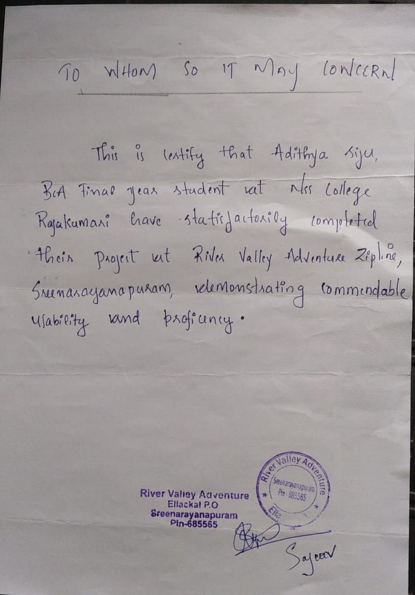
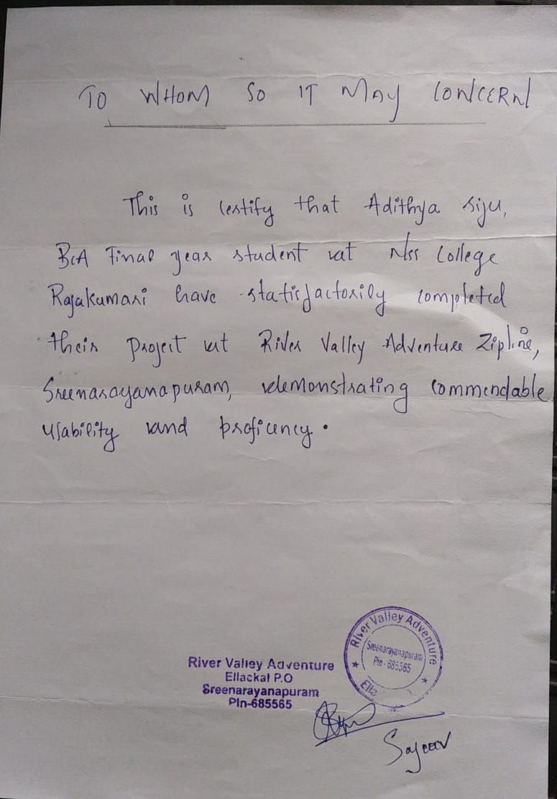

PROJECT
TOURISUM MANAGEMENT SYSTEM
It is one of the most magnificent waterfalls in Kerala tourism project and district tourism project . Ripple waterfalls is a project of 2 crore 52 lakhs under the fund of kerala tourist minister A.P Anilkumar and it established on 2016.
This place is 365*24 working . It opens at 8 AM and close at 6PM . 11 staffs are working here Mr. C.T Madhu is the manager then 1 office assistant ,6 tourism assistant ,1 helper,1 sweeper and 1 security are other staffs.
Here the employee management ,attendance marking,report geeration are saved in a register .the ticket geeration has a facilite of electronic machine bt not in a systematic format so we are going to provide all the above process in a computerized way, also provide a facilite to online ticket booking
Technologies used: PHP for backend, HTML, CSS, JavaScript for frontend, and SQL for database management.
.png)
.png)
.png)
ZIPLINE MANGEMENT SYSTEM
The Zipline Management System (ZMS) is a comprehensive solution designed to streamline and enhance the operations of Adventure Wally, a ziplining center located in Sreenarayanapuram, Munnar, owned by Mr. Sajeev, offering a thrilling ziplining experience. The system introduces a robust online booking platform, allowing users to conveniently reserve time slots, enforces weight restrictions (35 kg minimum and 90 kg maximum), and requires a nominal fee of 500 INR per participant. Additionally, it computerizes center operations, including employee management, daily collection tracking, and attendance management, while improving the efficiency of ticket management. The online ticket management feature attracts a wider audience, offering a user-friendly interface, saving time, and contributing to Adventure Wally's appeal as a leading ziplining destination, operating from 8 am to 6 pm with dedicated employees ensuring a seamless experience.
Technologies used: Python & Django for backend, HTML, CSS & Bootstrap for frontend, and SQL for database management.
.png)
.png)
.png)
.png)
.png)
.png) 
